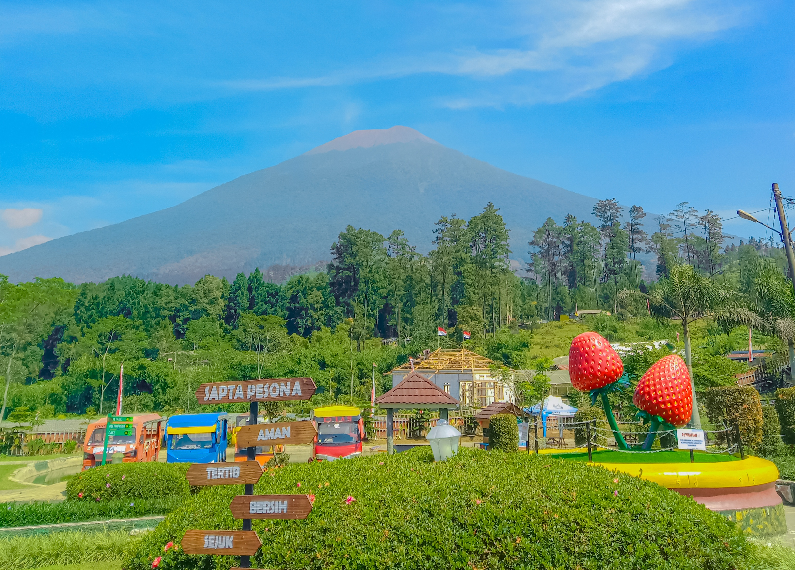

Geografi
Kabupaten Purbalingga terletak pada koordinat 101°11' BT – 109°35' BT dan 7°10' LS – 7°29' LS. Wilayahnya memiliki ketinggian antara 40 hingga 1.500 meter di atas permukaan laut, dengan dua musim utama: musim kemarau (Mei – September) dan musim penghujan (Oktober – April). Rata-rata suhu udara berkisar antara 23,2°C hingga 32,88°C.
Wilayah Purbalingga dikelilingi pegunungan seperti Gunung Slamet dan Dataran Tinggi Dieng di utara, serta Depresi Serayu di selatan yang dialiri oleh Kali Serayu dan anak sungainya seperti Kali Klawing, Kali Pekacangan, dan Kali Gintung.
Sejarah dan Budaya
Purbalingga dikenal dengan sejarahnya yang kaya, termasuk sebagai pusat kerajinan rambut palsu dan industri kecil lainnya. Tradisi lokal seperti seni calung, ebeg, dan wayang kulit masih dilestarikan oleh masyarakat setempat.
Daftar Bupati Purbalingga
| No | Nama | Periode |
|---|---|---|
| 1 | R. Wiryo Darmowidjojo | 1945 - 1947 |
| 2 | Drs. Tasdi | 2016 - 2018 |
| 3 | Dyah Hayuning Pratiwi, S.E., B.Econ., M.M. | 2019 - Sekarang |
Hubungi Kami
Untuk informasi lebih lanjut, hubungi kami melalui:
- Email: info@purbalingga.go.id
- Telepon: (0281) 123-4567
- Alamat: Jl. Letkol Isdiman No.1, Purbalingga, Jawa Tengah